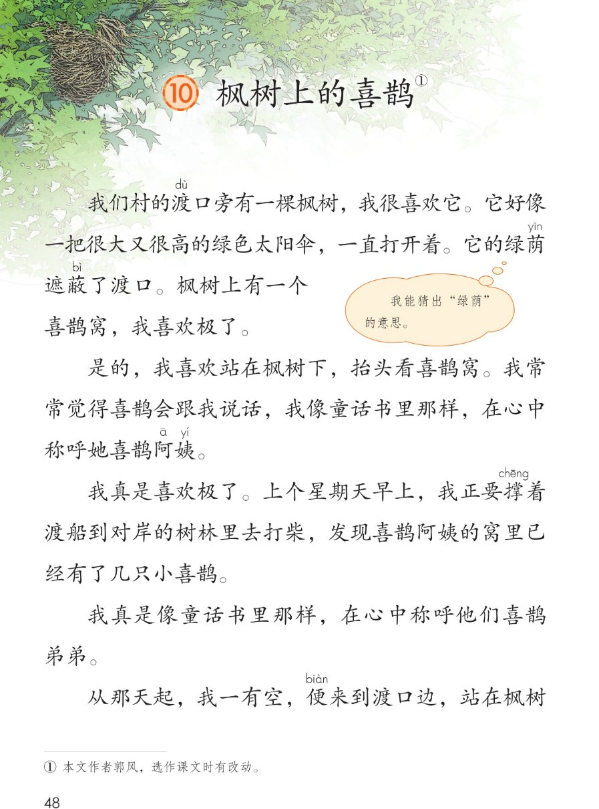
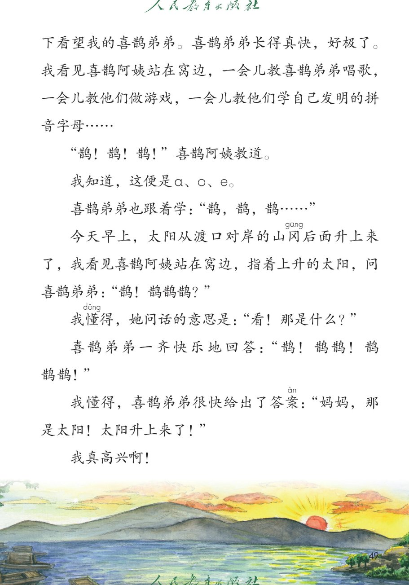
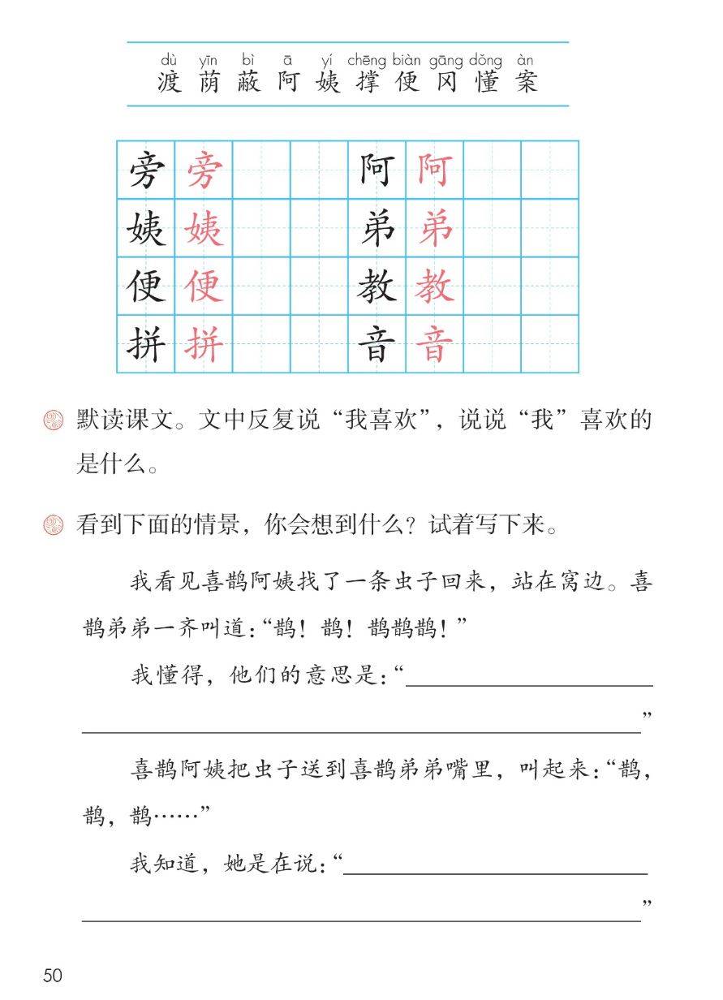

×
🔊 手机听不到声音怎么办？
① 先把手机
媒体音量调大 ，确认没开静音、没连蓝牙耳机；在微信里打开的，点右上角「⋯ → 用浏览器打开」。
② 还是没声音？到应用商店免费下载
Microsoft Edge 浏览器 （它自带朗读发声），用它打开本页面就能出声。
③ 换了 Edge 仍然没声音，说明这部手机的
硬件/系统不支持 网页朗读（多为老旧机型）；近几年买的新手机一般都能正常播放。
→ 打开声音自检
🐦 第 10 课《枫树上的喜鹊》· 有声图文带读
统编版语文 · 第四单元·阅读 · 课本 第 48~50 页 · 作者：郭风
课文 6 段 · 共 20 句
会认字 10
会写字 8
听写词 10
近义词 4 组
深入理解 8 题
本课本领 朗读·想象·体会童话趣味
🎧 五步学（可随时点任意一句、一个字、一个词单独听）： ① 听读课文 ——散文一篇，一句一句读，读到哪一句哪一句发光；开「跟读」后读完一句留时间让你自己读。② 学字词 ——10 个会认字、8 个会写字（含书写提示），点一个读一个。③ 词语·听写·造句 ——先读词语积累，再听写 10 个词（读两遍→你写→报答案→听示范句），最后听 4 组近义词辨析。④ 深入理解 ——8 道题（认知 / 理解 / 运用 / 拓展），开放题答案不唯一，先想后看。⑤ 分节朗读·想象画面 ——按五步想象枫树和喜鹊一家的画面，再听六位朗读者分节读这篇课文。
📚 第四单元·阅读（本课定位）： 第8课《彩色的梦》 → 第9课《一匹出色的马》 → 第10课《枫树上的喜鹊》 → （后续课文接用户提供的课本页序）
点段前的 ①②③④⑤⑥ 听整段
🔁 跟读模式：关
👁 隐藏注音（自测用）
注音只标本课要认、要写的字和课本明确标了音的字，读音来自课本第 50 页生字表
🎤 朗读要求（老师标准） 渡 读第四声，荫 读第一声，蔽 读第四声，阿 读第一声，姨 读第二声，撑 读第一声，便 读第四声，冈 读第一声，懂 读第三声，案 读第四声；不添字、不漏字 ：逗号停得短，句号停得长，一句一句读清楚；读出童话的神奇 ：喜鹊会说话，读得有趣；喜鹊阿姨教弟弟，读得耐心；弟弟学说话，读得可爱；最后"我真高兴啊"，读得开心；对话像喜鹊在叫 ：引号里"鹊！鹊！鹊！"这样的叫声，用又短又亮的语气读出来。
①
我们村的渡dù 口旁páng 有一棵枫树，我很喜欢它。
它好像一把很大又很高的绿色太阳伞，一直打开着。
它的绿荫yīn 遮蔽bì 了渡dù 口。
枫树上有一个喜鹊窝，我喜欢极了。
②
是的，我喜欢站在枫树下，抬头看喜鹊窝。
我常常觉得喜鹊会跟我说话，我像童话书里那样，在心中称呼她喜鹊阿ā 姨yí 。
我真是喜欢极了。
上个星期天早上，我正要撑chēng 着渡dù 船到对岸的树林里去打柴，发现喜鹊阿ā 姨yí 的窝里已经有了几只小喜鹊。
③
我真是像童话书里那样，在心中称呼他们喜鹊弟dì 弟dì 。
从那天起，我一有空，便biàn 来到渡dù 口边，站在枫树下看望我的喜鹊弟dì 弟dì 。
喜鹊弟dì 弟dì 长得真快，好极了。
④
我看见喜鹊阿ā 姨yí 站在窝边，一会儿教jiāo 喜鹊弟dì 弟dì 唱歌，一会儿教jiāo 他们做游戏，一会儿教jiāo 他们学自己发明的拼pīn 音yīn 字母……
"鹊！鹊！鹊！"喜鹊阿ā 姨yí 教jiāo 道。
我知道，这便biàn 是 a、o、e。
喜鹊弟dì 弟dì 也跟着学："鹊，鹊，鹊……"
⑤
今天早上，太阳从渡dù 口对岸的山冈gāng 后面升上来了，我看见喜鹊阿ā 姨yí 站在窝边，指着上升的太阳，问喜鹊弟dì 弟dì ："鹊！鹊鹊鹊？"
我懂dǒng 得，她问话的意思是："看！那是什么？"
喜鹊弟dì 弟dì 一齐快乐地回答："鹊！鹊鹊！鹊鹊鹊！"
我懂dǒng 得，喜鹊弟dì 弟dì 很快给出了答案àn ："妈妈，那是太阳！太阳升上来了！"
⑥
我真高兴啊！
🤔 想一想（点我可跳过）
点一张图，听读整页

第 48 页 · 课题与课文前段

第 49 页 · 课文后段与对话

第 50 页 · 会写字与课后题
📖 人教版《语文》二年级下册 · 课本第 48~50 页 · 图片仅供个人学习，版权归人民教育出版社所有
点一个字，听读音、词语和课文里的句子
结构、部首、笔画与书写提示为通用规范，供参考，以教材和老师的指导为准
旁
páng
旁边 · 路旁
10 画 · 上下（方）
上点下横，方字写稳
阿
ā
阿姨 · 阿爸
7 画 · 左右（阝）
左耳写窄，可字写稳
姨
yí
阿姨 · 姨妈
9 画 · 左右（女）
左女右夷，夷写稳
弟
dì
弟弟 · 兄弟
7 画 · 上下（弓）
上撇下弓，竖钩写正
便
biàn
方便 · 便利
9 画 · 左右（亻）
左人右更，更写稳
教
jiāo
教书 · 教歌
11 画 · 左右（攵）
左孝右攵，捺舒展
拼
pīn
拼音 · 拼写
9 画 · 左右（扌）
左手右并，并写稳
音
yīn
拼音 · 音乐
9 画 · 上下（立）
上立下日，写紧凑
点一行，听词语和课后题
📖 课后题（课本第 50 页照录） ：① 默读课文。文中反复说"我喜欢"，说说"我"喜欢的是什么。 ② 看到下面的情景，你会想到什么？试着写下来。
喜欢 喜欢 喜爱
遮蔽 遮蔽 遮挡
快乐 快乐 高兴
懂得 懂得 明白
读两遍 → 你在纸上写 → 报答案 → 听示范句
准备听写 · 共 10 个词
○ ○ ○
点下面的「开始听写」，听到一个词就写一个词。
▶ 开始听写
🔁 再读一遍
👁 看答案
点词听读，点句子听示范句，再自己说一句
1 旁边 会写字 · 旁
示范句：我们村的渡口旁边长着一棵大枫树。
✏️ 我也能说：哪里 + 旁边有什么
2 阿姨 会写字 · 姨
示范句：我把大喜鹊叫做喜鹊阿姨。
✏️ 我也能说：谁 + 叫谁阿姨
3 弟弟 会写字 · 弟
示范句：喜鹊阿姨的窝里有了小喜鹊，我叫他喜鹊弟弟。
✏️ 我也能说：谁 + 有弟弟
4 方便 会写字 · 便
示范句：我一有空，便来看望喜鹊弟弟。
✏️ 我也能说：什么时候 + 便做什么
5 教书 会写字 · 教
示范句：喜鹊阿姨教弟弟唱歌、做游戏。
✏️ 我也能说：谁 + 教谁做什么
6 拼音 会写字 · 拼/音
示范句：喜鹊阿姨教弟弟学自己发明的拼音字母。
✏️ 我也能说：谁 + 学拼音
7 渡口 会认字 · 渡
示范句：我们村的渡口旁有一棵枫树。
✏️ 我也能说：哪里 + 有渡口
8 绿荫 会认字 · 荫
示范句：枫树的绿荫遮蔽了渡口。
✏️ 我也能说：什么 + 的绿荫
9 山冈 会认字 · 冈
示范句：太阳从山冈后面升上来了。
✏️ 我也能说：什么 + 的山冈
10 懂得 会认字 · 懂
示范句：我懂得喜鹊弟弟说的是什么。
✏️ 我也能说：谁 + 懂得什么
相同点 / 不一样在哪 / 各造一句
喜欢 — 喜爱
相同：都表示对人或事物有好感、高兴 。
不一样：喜欢 和喜爱 意思很近，课文写我很喜欢枫树、喜欢极了；喜爱也常这样用。
喜欢：我很喜欢这只小猫。
高兴 — 快乐
相同：都表示心情好、开心 。
不一样：高兴 和快乐 意思很近，课文写喜鹊弟弟快乐地回答，我也真高兴啊。
高兴：收到礼物我很高兴。
遮蔽 — 遮挡
相同：都表示挡住、盖住，使看不见 。
不一样：遮蔽 常带书面味，课文写绿荫遮蔽了渡口；遮挡 更口语，常说遮挡阳光。
遮蔽：大树遮蔽了小路。
懂得 — 明白
相同：都表示知道、理解 。
不一样：懂得 和明白 意思很近，课文写我懂得喜鹊在说什么；明白也常这样用。
懂得：我懂得这个道理。
一会儿…一会儿…一会儿… 一会儿教唱歌，一会儿教做游戏，一会儿教学拼音字母
数量词 + 事物 一棵枫树 一把太阳伞 一个喜鹊窝
喜鹊的叫声（反复） 鹊！鹊！鹊！ 鹊，鹊，鹊……
像…一样（比喻） 好像一把很大又很高的绿色太阳伞
标「答案不唯一」的题，说得有道理都对
认知 课文里"我"在枫树下认识了哪两位新朋友？他们是什么关系？看解析
🤔 想一想
解析：
喜鹊阿姨、喜鹊弟弟
阿姨和弟弟，像妈妈和孩子
枫树上的喜鹊窝
认知 课文可以分成几个部分？分别写了什么？看解析
🤔 想一想
解析：
喜欢枫树和喜鹊窝
阿姨教弟弟本领
早晨对话，我真高兴
理解 文中反复说"我喜欢"，"我"喜欢的是什么？看解析
🤔 想一想
解析：
像太阳伞，有喜鹊窝
阿姨和弟弟
它们会说话，像童话
理解 "它好像一把很大又很高的绿色太阳伞"用了什么写法？把什么比作了什么？看解析
🤔 想一想
解析：
比喻，打比方
枫树比作太阳伞
写出枫树又大又绿
理解 "一会儿教唱歌，一会儿教做游戏，一会儿教学拼音字母"用了什么句式？这样写有什么好处？看解析
🤔 想一想
运用 看到喜鹊阿姨找虫子回来，喜鹊弟弟叫"鹊！鹊！鹊鹊鹊！"，你觉得他们是什么意思？写一写。看解析
🤔 想一想
运用 喜鹊阿姨把虫子送到弟弟嘴里，叫"鹊，鹊，鹊……"，她是在说什么？写一写。看解析
🤔 想一想
拓展 你最喜欢课文里的哪个画面？为什么？看解析
🤔 想一想
点一步，听这一步
1
村口大枫树
2
喜鹊阿姨和弟弟
3
阿姨教本领
4
早晨的太阳对话
💬 想象支架：先 想村口的大枫树 → 再 想喜鹊阿姨和弟弟 → 接着 想阿姨教弟弟 → 最后 想早晨的太阳对话和我的真高兴。
点一张卡，听这一段的句子
🌈 第1段·朗读者
第1段：我们村的渡口旁有一棵枫树，我很喜欢它。
💬 介绍枫树和喜鹊窝，读得喜欢
🌈 第2段·朗读者
第2段：是的，我喜欢站在枫树下，抬头看喜鹊窝。
💬 称呼喜鹊阿姨，发现小喜鹊，读得惊喜
🌈 第3段·朗读者
第3段：我真是像童话书里那样，在心中称呼他们喜鹊弟弟。
💬 看望喜鹊弟弟，读得亲热
🌈 第4段·朗读者
第4段：我看见喜鹊阿姨站在窝边，一会儿教喜鹊弟弟唱歌，一会儿教他们做游戏，一会儿教他们学自己发明的拼音字母
💬 阿姨教弟弟，读得耐心活泼
🌈 第5段·朗读者
第5段：今天早上，太阳从渡口对岸的山冈后面升上来了，我看见喜鹊阿姨站在窝边，指着上升的太阳，问喜鹊弟弟：鹊！鹊鹊鹊？
💬 早晨对话，读得好奇高兴
🌈 第6段·朗读者
第6段：我真高兴啊！
💬 我真高兴，读得开心